In this chapter learners will explore the concept of a covalent bond in greater detail. In grade ten learners learnt about the three types of chemical bond (ionic, covalent and metallic). A great video to introduce this topic is: Veritasium chemical bonding song. In this chapter the focus is on the covalent bond. A short breakdown of the topics in this chapter follows.
Electron structure and Lewis diagrams (from grade )
As revision you can ask learners to draw Lewis diagrams for the first elements and give the electronic structure (this was covered in grade ). This then leads into thinking how the elements can share electrons in a bond. Learners should recognise that there are unpaired electrons in atoms that can be shared to form the bonds.
It is important to note that when drawing Lewis diagrams, we first place single electrons around the central atom and only once four electrons have been placed, do we pair electrons up. This will avoid the need to explain hybridisation. It is also important for learners to realise that the placement of electrons is arbitrary and the electrons can be placed anywhere around the atom.
Why hydrogen is a diatomic molecule but helium is a monatomic molecule
This part of the chapter is interleaved with electron structure and Lewis diagrams as these two concepts play a key role in understanding why hydrogen is diatomic and helium is monatomic. In this part learners are introduced to the idea that when two atoms come close together there is a change in the potential energy. This forms a strong foundation for explaining the energy changes that occur in chemical reactions and will be seen again in chapter (energy changes in chemical reactions).
Deducing simple rules about bond formation (and drawing Lewis diagrams for these molecules)
Four cases are looked at to try to understand why bonds form. This is all about the covalent bond, so all the examples you use must be of covalent molecules (and you must also only pick examples of covalent molecular structures as covalent network structures are more like ionic networks and do not form simple molecular units). It is also important to help learners realise that a lone pair of electrons is very much dependant on the molecule that they are looking at. Lone pairs of electrons can be used under special circumstances to form dative (or coordinate) covalent bonds.
The basic principles of VSEPR and predicting molecular shape
You can build the different molecular shapes before starting to teach VSEPR from large polystyrene balls and kebab sticks or you can give your learners jellytots or marshmallows and toothpicks and get them to build the molecular shapes. Remember that the shapes with lone pairs need more space for the lone pairs and so it is not as simple as just removing the toothpick for the lone pair.
This topic covers the shapes that molecules have. This is only the shapes of covalent molecular compounds, covalent network structures, ionic compounds and metals have very different three dimensional forms. This topic is important to help learners determine polarity of molecules. Two approaches are used to determine the shape of a molecule. The first one looks at molecules matching up to a general formula while the second one considers how many electron pairs are around a central atom. These two approaches can be used together to help learners fully understand this topic.
Electronegativity and polarity of bonds
It is important to note that CAPs does not give a definitive source for electronegativity values. You should use the ones found on the periodic table in the matric exams (these are the same values as the ones on the periodic table at the front of this book). Learners should be aware that they may see different values on other periodic tables. Learners must not think of the different types of bonding as being exactly defined. Also, the values for where the types of bonding transition are not exact and different sources quote different cut-off points.
The simplest examples of polarity are the ideal shapes with all the end atoms the same and so you should stick to this in your explanation. You can explain this for trigonal planar molecules by using your learners. Get three girls or three boys to link hands (they all put their right hand into the centre and hold the other two learners right hands). Then they try to pull away (all learners pull equally). This is the even sharing of electrons. Now replace a girl with a boy (or vice versa) and tell the new learner to pull a bit less. This shows the uneven sharing of electrons.
Bond length and bond energy
In this final part of the chapter we return to our energy diagram and add two pieces of information: bond energy and bond length. The bond length is the distance between the two atoms when they are at their minimum energy, while the bond energy is this minimum energy. The bond energy comes up again in chapter (energy and chemical change) when the topic of exothermic and endothermic reactions is covered.
Coloured text has been used as a tool to highlight different parts of Lewis diagrams. Ensure that learners understand that the coloured text does not mean there is anything special about that part of the diagram, this is simply a teaching tool to help them identify the important aspects of the diagram, in particular the unpaired electrons.
We live in a world that is made up of many complex compounds. All around us we see evidence of chemical bonding from the chair you are sitting on, to the book you are holding, to the air you are breathing. Imagine if all the elements on the periodic table did not form bonds but rather remained on their own. Our world would be pretty boring with only or so elements to use.
Imagine you were painting a picture and wanted to show the colours around you. The only paints you have are red, green, yellow, blue, white and black. Yet you are able to make pink, purple, orange and many other colours by mixing these paints. In the same way, the elements can be thought of as natures paint box. The elements can be joined together in many different ways to make new compounds and so create the world around you.
In Grade we started exploring chemical bonding. In this chapter we will go on to explain more about chemical bonding and why chemical bonding occurs. We looked at the three types of bonding: covalent, ionic and metallic. In this chapter we will focus mainly on covalent bonding and on the molecules that form as a result of covalent bonding.
In this chapter we will use the term molecule to mean a covalent molecular structure. This is a covalent compound that interacts and exists as a single entity.
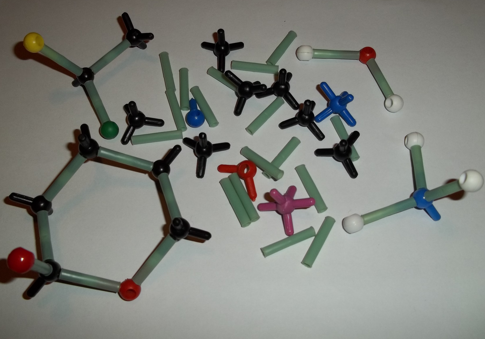
Chemical bonds
Why do atoms bond?
As we begin this section, it's important to remember that what we will go on to discuss is a model of bonding, that is based on a particular model of the atom. You will remember from the discussion on atoms (in Grade ) that a model is a representation of what is happening in reality. In the model of the atom that you are learnt in Grade , the atom is made up of a central nucleus, surrounded by electrons that are arranged in fixed energy levels (sometimes called shells). Within each energy level, electrons move in orbitals of different shapes. The electrons in the outermost energy level of an atom are called the valence electrons. This model of the atom is useful in trying to understand how different types of bonding take place between atoms.
A model takes what we see in the world around us and uses that to make certain predictions about what we cannot see.
Electron arrangement of a fluorine atom. The black electrons (small circles on the inner ring) are the core electrons and the white electrons (small circles on the outer ring) are the valence electrons.
The following points were made in these earlier discussions on electrons and energy levels:
Electrons always try to occupy the lowest possible energy level.
The noble gases have a full valence electron orbital. For example neon has the following electronic configuration: . The second energy level is the outermost (valence) shell and is full.
Atoms form bonds to try to achieve the same electron configuration as the noble gases.
Atoms with a full valence electron orbital are less reactive.
Energy and bonding
There are two cases that we need to consider when two atoms come close together. The first case is where the two atoms come close together and form a bond. The second case is where the two atoms come close together but do not form a bond. We will use hydrogen as an example of the first case and helium as an example of the second case.
Case : A bond forms
Let's start by imagining that there are two hydrogen atoms approaching one another. As they move closer together, there are three forces that act on the atoms at the same time. These forces are described below:
repulsive force between the electrons of the atoms, since like charges repel
These three forces work together when two atoms come close together. As the total force experienced by the atoms changes, the amount of energy in the system also changes.
Now look at Figure fig-bonding-energy1 to understand the energy changes that take place when the two atoms move towards each other.
<code>
(-5.5,-4)(6.5,4)
\psaxes[ticks=none,labels=none](-4,0)(-4,-3.5)(6,3.5)
\psplot{-3.6}{6}{0.15 x 10 add mul -12 exp 0.15 x 10 add mul -6 exp sub
10 mul}
\rput{90}(-5,0){Energy}
\psline{->}(-4.7,-2.5)(-4.7,2.5)
\uput[l](-4,3){+}
\uput[l](-4,0){0}
\uput[l](-4,-3){-}
\rput[u](3.5,1){Distance between atomic nuclei}
\psline{->}(1,0.6)(6,0.6)
\uput[u](6,0){A}
\pnode(-2.5,0){qTop}
\pnode(-2.5,-2.5){qBottom}
\pnode(-4,0.4){pLeft}
\pnode(-2.5,0.4){pRight}
\uput[d](-2.5,-2.5){X}
%the two atoms at point A
\scalebox{.4}{\rput(11,-1.6){
\definecolor{color99}{rgb}{0.0,0.5,1.0}
\definecolor{color113}{rgb}{0.0,0.67,1.0}
\definecolor{color8}{rgb}{0.0,0.33,1.0}
\pscircle[linecolor=color113,linestyle=dotted,fillstyle=solid,fillcolor=color113](0.6,0.0){0.6}
\pscircle[linecolor=color99,linestyle=dotted,fillstyle=solid,fillcolor=color99](0.6,0.0){0.56}
\pscircle[linecolor=color8,linestyle=dotted,fillstyle=solid,fillcolor=color8](0.6,0.0){0.5}
\psdots[dotsize=0.16](0.6,0.0)}}
\scalebox{.4}{\rput(13.5,-1.6){
\definecolor{color99}{rgb}{0.0,0.5,1.0}
\definecolor{color113}{rgb}{0.0,0.67,1.0}
\definecolor{color8}{rgb}{0.0,0.33,1.0}
\pscircle[linecolor=color113,linestyle=dotted,fillstyle=solid,fillcolor=color113](0.6,0.0){0.6}
\pscircle[linecolor=color99,linestyle=dotted,fillstyle=solid,fillcolor=color99](0.6,0.0){0.56}
\pscircle[linecolor=color8,linestyle=dotted,fillstyle=solid,fillcolor=color8](0.6,0.0){0.5}
\psdots[dotsize=0.16](0.6,0.0)}}
%the two atoms between X and A
\psline{->}(1,-1.2)(1.4,-1.2)
\psline{->}(2,-1.2)(1.6,-1.2)
\scalebox{.4}{\rput(2,-2.2){
\definecolor{color99}{rgb}{0.0,0.5,1.0}
\definecolor{color113}{rgb}{0.0,0.67,1.0}
\definecolor{color8}{rgb}{0.0,0.33,1.0}
\pscircle[linecolor=color113,linestyle=dotted,fillstyle=solid,fillcolor=color113](0.6,0.0){0.6}
\pscircle[linecolor=color99,linestyle=dotted,fillstyle=solid,fillcolor=color99](0.6,0.0){0.56}
\pscircle[linecolor=color8,linestyle=dotted,fillstyle=solid,fillcolor=color8](0.6,0.0){0.5}
\psdots[dotsize=0.16](0.6,0.0)
}}
\scalebox{.4}{\rput(4,-2.2){
\definecolor{color99}{rgb}{0.0,0.5,1.0}
\definecolor{color113}{rgb}{0.0,0.67,1.0}
\definecolor{color8}{rgb}{0.0,0.33,1.0}
\pscircle[linecolor=color113,linestyle=dotted,fillstyle=solid,fillcolor=color113](0.6,0.0){0.6}
\pscircle[linecolor=color99,linestyle=dotted,fillstyle=solid,fillcolor=color99](0.6,0.0){0.56}
\pscircle[linecolor=color8,linestyle=dotted,fillstyle=solid,fillcolor=color8](0.6,0.0){0.5}
\psdots[dotsize=0.16](0.6,0.0)}}
%and the atoms at X
\scalebox{0.4}{\rput(-8,-8.5){
\definecolor{color99}{rgb}{0.0,0.5019607843137255,1.0}
\definecolor{color8}{rgb}{0.0,0.3333333333333333,1.0}
\definecolor{color218}{rgb}{0.0,0.6666666666666666,1.0}
\psbezier[linewidth=0.04,linecolor=color218,fillstyle=solid,fillcolor=color218](0.0,0.02619693)(0.0,0.48028144)(0.5264151,0.62)(0.73018867,0.49774647)(0.9339623,0.37549296)(0.8320755,0.3056338)(1.0867925,0.4628169)(1.3415095,0.62)(1.8,0.55014086)(1.8,0.008732394)(1.8,-0.53267604)(1.2566037,-0.58507043)(1.0867925,-0.4453521)(0.91698116,-0.3056338)(0.9509434,-0.3405634)(0.73018867,-0.48028168)(0.509434,-0.62)(0.0,-0.4278876)(0.0,0.02619693)
\psbezier[linewidth=0.04,linecolor=color99,fillstyle=solid,fillcolor=color99](0.02,0.04535197)(0.02,0.4847886)(0.51716983,0.62)(0.7096226,0.50169015)(0.90207547,0.3833803)(0.8058491,0.31577465)(1.0464151,0.4678873)(1.2869811,0.62)(1.72,0.5523944)(1.72,0.028450705)(1.72,-0.49549296)(1.2067925,-0.5461972)(1.0464151,-0.41098592)(0.8860377,-0.27577466)(0.91811323,-0.30957747)(0.7096226,-0.44478872)(0.5011321,-0.58)(0.02,-0.39408466)(0.02,0.04535197)
\psbezier[linewidth=0.04,linecolor=color8,fillstyle=solid,fillcolor=color8](0.1,0.0628169)(0.1,0.45830986)(0.55037737,0.58)(0.72471696,0.4735211)(0.8990566,0.36704224)(0.8118868,0.3061972)(1.0298113,0.4430986)(1.2477359,0.58)(1.64,0.5191549)(1.64,0.047605634)(1.64,-0.42394367)(1.1750944,-0.46957746)(1.0298113,-0.34788734)(0.8845283,-0.22619718)(0.9135849,-0.25661972)(0.72471696,-0.37830985)(0.53584903,-0.5)(0.1,-0.33267605)(0.1,0.0628169)
\psdots[dotsize=0.16](1.26,0.04)
\psdots[dotsize=0.16](0.52,0.06)
}
}
%and finally the atoms past X
\scalebox{.45}{\rput(-8.5,1){
\definecolor{color1004b}{rgb}{0.0,0.3333333333333333,1.0}
\definecolor{color1056b}{rgb}{0.0,0.5019607843137255,1.0}
\definecolor{color1059b}{rgb}{0.0,0.6666666666666666,1.0}
\psellipse[linewidth=0.04,linecolor=color1059b,dimen=outer,fillstyle=solid,fillcolor=color1059b](1.31,0.0)(0.77,0.48)
\psellipse[linewidth=0.04,linecolor=color1056b,dimen=outer,fillstyle=solid,fillcolor=color1056b](1.32,0.02)(0.7,0.46)
\psellipse[linewidth=0.04,linecolor=color1004b,dimen=outer,fillstyle=solid,fillcolor=color1004b](1.33,0.02)(0.61,0.44)
\psdots[dotsize=0.16](1.48,0.04)
\psdots[dotsize=0.16](1.24,0.04)
\psline[linewidth=0.04cm,arrowinset=0.4]{->}(2.04,0.02)(2.56,0.02)
\psline[linewidth=0.04cm,arrowinset=0.4]{->}(0.56,0.02)(0.0,0.02)
}
}
</code>
Graph showing the change in energy that takes place as two hydrogen atoms move closer together.
Let us imagine that we have fixed the one atom and we will move the other atom closer to the first atom. As we move the second hydrogen atom closer to the first (from point A to point X) the energy of the system decreases. Attractive forces dominate this part of the interaction. As the second atom approaches the first one and gets closer to point X, more energy is needed to pull the atoms apart. This gives a negative potential energy.
At point X, the attractive and repulsive forces acting on the two hydrogen atoms are balanced. The energy of the system is at a minimum.
Further to the left of point X, the repulsive forces are stronger than the attractive forces and the energy of the system increases.
For hydrogen the energy at point X is low enough that the two atoms stay together and do not break apart again. This is why when we draw the Lewis diagram for a hydrogen molecule we draw two hydrogen atoms next to each other with an electron pair between them.
We also note that this arrangement gives both hydrogen atoms a full outermost energy level (through the sharing of electrons or covalent bonding).
Case : A bond does not form
Now if we look at helium we see that each helium atom has a filled outer energy level. Looking at Figure fig-heliumbonding we find that the energy minimum for two helium atoms is very close to zero. This means that the two atoms can come together and move apart very easily and never actually stick together.
Graph showing the change in energy that takes place as two helium atoms move closer together.
For helium the energy minimum at point X is not low enough that the two atoms stay together and so they move apart again. This is why when we draw the Lewis diagram for helium we draw one helium atom on its own. There is no bond.
We also see that helium already has a full outermost energy level and so no compound forms.
Now that we understand a bit more about bonding we need to refresh the concept of Lewis diagrams that you learnt about in Grade . With the knowledge of why atoms bond and the knowledge of how to draw Lewis diagrams we will have all the tools that we need to try to predict which atoms will bond and what shape the molecule will be.
In grade we learnt how to write the electronic structure for any element. For drawing Lewis diagrams the one that you should be familiar with is the spectroscopic notation. For example the electron configuration of chlorine in spectroscopic notation is: . Or if we use the condensed form: . The condensed spectroscopic notation quickly shows you the valence electrons for the element.
Using the number of valence electrons we can easily draw Lewis diagrams for any element. In Grade you learnt how to draw Lewis diagrams. We will refresh the concepts here as they will aid us in our discussion of bonding.
A Lewis diagram uses dots or crosses to represent the valence electrons on different atoms. The chemical symbol of the element is used to represent the nucleus and the core electrons of the atom.
Lewis diagrams for the elements in period are shown below:
Covalent bonding involves the sharing of electrons to form a chemical bond. The outermost orbitals of the atoms overlap so that unpaired electrons in each of the bonding atoms can be shared. By overlapping orbitals, the outer energy shells of all the bonding atoms are filled. The shared electrons move in the orbitals around both atoms. As they move, there is an attraction between these negatively charged electrons and the positively charged nuclei. This attractive force holds the atoms together in a covalent bond.
Covalent bond
A form of chemical bond where pairs of electrons are shared between atoms.
Covalent bonds are examples of interatomic forces.
We will look at a few simple cases to deduce some rules about covalent bonds.
Remember that it is only the valence electrons that are involved in bonding, and so when diagrams are drawn to show what is happening during bonding, it is only these electrons that are shown. Dots or crosses represent electrons in different atoms.
Case : Two atoms that each have an unpaired electron
For this case we will look at hydrogen chloride and methane.
Lewis diagrams: Simple molecules
Represent hydrogen chloride () using a Lewis diagram.
For each atom, determine the number of valence electrons in the atom, and represent these using dots and crosses.
The electron configuration of hydrogen is and the electron configuration for chlorine is .
The hydrogen atom has valence electron and the chlorine atom has valence electrons.
Notice the single unpaired electron (highlighted in blue) on each atom. This does not mean this electron is different, we use highlighting here to help you see the unpaired electron.
Arrange the electrons so that the outermost energy level of each atom is full.
Notice how the two unpaired electrons (one from each atom) form the covalent bond.
The dot and cross in between the two atoms, represent the pair of electrons that are shared in the covalent bond. We can also show this bond using a single line:
Note how we still show the other electron pairs around chlorine.
From this we can conclude that any electron on its own will try to pair up with another electron. So in practise atoms that have at least one unpaired electron can form bonds with any other atom that also has an unpaired electron. This is not restricted to just two atoms.
Lewis diagrams: Simple molecules
Represent methane () using a Lewis diagram
For each atom, determine the number of valence electrons in the atom, and represent these using dots and crosses.
The electron configuration of hydrogen is and the electron configuration for carbon is .
Each hydrogen atom has valence electron and the carbon atom has valence electrons.
We will use water as an example. Water is made up of one oxygen and two hydrogen atoms. Hydrogen has one unpaired electron. Oxygen has two unpaired electrons and two electron pairs. From what we learnt in the first examples we see that the unpaired electrons can pair up. But what happens to the two pairs? Can these form bonds?
Lewis diagrams: Simple molecules
Represent water () using a Lewis diagram
For each atom, determine the number of valence electrons in the atom, and represent these using dots and crosses.
The electron configuration of hydrogen is and the electron configuration for oxygen is .
Each hydrogen atom has valence electron and the oxygen atom has valence electrons.
Notice how in this example we wrote a in front of the hydrogen? Instead of writing the Lewis diagram for hydrogen twice, we simply write it once and use the in front of it to indicate that two hydrogens are needed for each oxygen.
And now we can answer the questions that we asked before the worked example. We see that oxygen forms two bonds, one with each hydrogen atom. Oxygen however keeps its electron pairs and does not share them. We can generalise this to any atom. If an atom has an electron pair it will normally not share that electron pair.
A lone pair is an unshared electron pair. A lone pair stays on the atom that it belongs to.
A lone pair can be used to form a dative covalent bond.
In the example above the lone pairs on oxygen are highlighted in red. When we draw the bonding pairs using lines it is much easier to see the lone pairs on oxygen.
Represent the following molecules using Lewis diagrams:
Arrange the electrons in the molecule so that the outermost energy level in each atom is full.
The molecule is represented below. Notice the two electron pairs between the two oxygen atoms (highlighted in blue). Because these two covalent bonds are between the same two atoms, this is a double bond.
Each oxygen atom uses its two unpaired electrons to form two bonds. This forms a double covalent bond (which is shown by a double line between the two oxygen atoms).
Lewis diagrams: Molecules with multiple bonds
Represent hydrogen cyanide () using a Lewis diagram
For each atom, determine the number of valence electrons that the atom has from its electron configuration.
The electron configuration of hydrogen is , the electron configuration of nitrogen is and for carbon is . Hydrogen has valence electron, carbon has valence electrons and nitrogen has valence electrons.
Arrange the electrons in the molecule so that the outermost energy level in each atom is full.
The molecule is represented below. Notice the three electron pairs (highlighted in red) between the nitrogen and carbon atom. Because these three covalent bonds are between the same two atoms, this is a triple bond.
As we have just seen carbon shares one electron with hydrogen and three with nitrogen. Nitrogen keeps its electron pair and shares its three unpaired electrons with carbon.
Represent the following molecules using Lewis diagrams:
This type of bond is a description of covalent bonding that occurs between two atoms in which both electrons shared in the bond come from the same atom.
A dative covalent bond is also known as a coordinate covalent bond. Earlier we said that atoms with a pair of electrons will normally not share that pair to form a bond. But now we will see how an electron pair can be used by atoms to form a covalent bond.
One example of a molecule that contains a dative covalent bond is the ammonium ion () shown in the figure below. The hydrogen ion does not contain any electrons, and therefore the electrons that are in the bond that forms between this ion and the nitrogen atom, come only from the nitrogen.
Notice that the hydrogen ion is charged and that this charge is shown on the ammonium ion using square brackets and a plus sign outside the square brackets.
Any electron on its own will try to pair up with another electron. So in theory atoms that have at least one unpaired electron can form bonds with any other atom that also has an unpaired electron. This is not restricted to just two atoms.
If an atom has an electron pair it will normally not share that pair to form a bond. This electron pair is known as a lone pair.
If an atom has more than one unpaired electron it can form multiple bonds to another atom. In this way double and triple bonds are formed.
A dative covalent bond can be formed between an atom with no electrons and an atom with a lone pair.
Exercises
Represent each of the following atoms using Lewis diagrams:
. There are dots around element Y and from our knowledge of Lewis diagrams we know that these represent the valence electrons.
How many valence electrons does element X have?
. X contributes one electron (represented by a cross) to the bond and X has no other electrons.
How many covalent bonds are in the molecule?
single bonds. From our knowledge of Lewis diagrams we look at how many cross and dot pairs there are in the molecule and that gives us the number of covalent bonds.
These are single bonds since there is only one dot and cross pair between adjacent atoms.
Suggest a name for the elements X and Y.
The most likely atoms are: Y: oxygen and X: hydrogen.
Note that Y could also be sulfur and X hydrogen and the molecule would then be hydrogen sulfide (sulfur dihydride).
Molecular shape (the shape that a single molecule has) is important in determining how the molecule interacts and reacts with other molecules. Molecular shape also influences the boiling point and melting point of molecules. If all molecules were linear then life as we know it would not exist. Many of the properties of molecules come from the particular shape that a molecule has. For example if the water molecule was linear, it would be non-polar and so would not have all the special properties it has.
Valence shell electron pair repulsion (VSEPR) theory
The shape of a covalent molecule can be predicted using the Valence Shell Electron Pair Repulsion (VSEPR) theory. Very simply, VSEPR theory says that the valence electron pairs in a molecule will arrange themselves around the central atom(s) of the molecule so that the repulsion between their negative charges is as small as possible.
In other words, the valence electron pairs arrange themselves so that they are as far apart as they can be.
Valence Shell Electron Pair Repulsion Theory
Valence shell electron pair repulsion (VSEPR) theory is a model in chemistry, which is used to predict the shape of individual molecules. VSEPR is based upon minimising the extent of the electron-pair repulsion around the central atom being considered.
VSEPR theory is based on the idea that the geometry (shape) of a molecule is mostly determined by repulsion among the pairs of electrons around a central atom. The pairs of electrons may be bonding or non-bonding (also called lone pairs). Only valence electrons of the central atom influence the molecular shape in a meaningful way.
Determining molecular shape
To predict the shape of a covalent molecule, follow these steps:
Draw the molecule using a Lewis diagram. Make sure that you draw all the valence electrons around the molecule's central atom.
Count the number of electron pairs around the central atom.
Determine the basic geometry of the molecule using the table below. For example, a molecule with two electron pairs (and no lone pairs) around the central atom has a linear shape, and one with four electron pairs (and no lone pairs) around the central atom would have a tetrahedral shape.
The central atom is the atom around which the other atoms are arranged. So in a molecule of water, the central atom is oxygen. In a molecule of ammonia, the central atom is nitrogen.
The table below gives the common molecular shapes. In this table we use A to represent the central atom, X to represent the terminal atoms (i.e. the atoms around the central atom) and E to represent any lone pairs.
Number of bonding electron pairs
Number of lone pairs
Geometry
General formula
or
linear
or
bent or angular
trigonal planar
trigonal pyramidal
tetrahedral
trigonal bipyramidal
octahedral
The effect of electron pairs in determining the shape of molecules. Note that in the general example is the central atom and represents the terminal atoms.
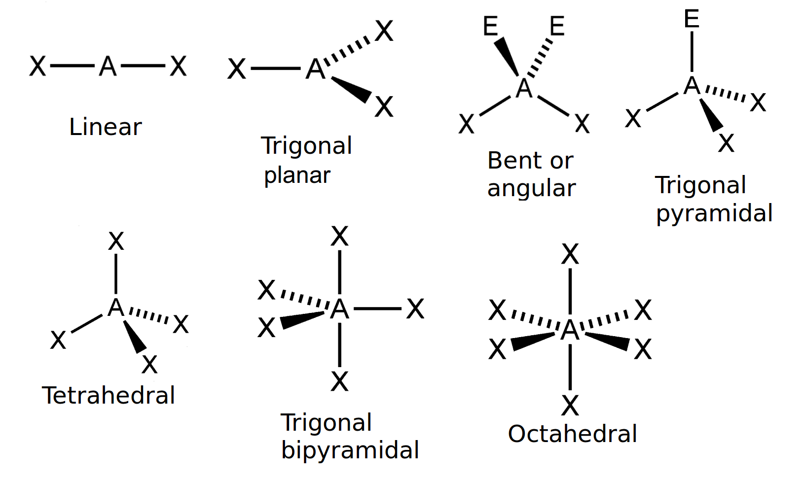
The common molecular shapes.
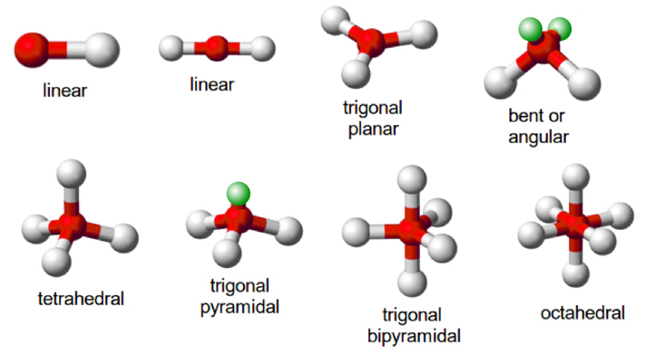
The common molecular shapes in 3-D.
In Figure fig-shapes the green balls represent the lone pairs (E), the white balls (X) are the terminal atoms and the red balls (A) are the center atoms.
Of these shapes, the ones with no lone pairs are called the ideal shapes. The five ideal shapes are: linear, trigonal planar, tetrahedral, trigonal bypramidal and octahedral.
One important point to note about molecular shape is that all diatomic (compounds with two atoms) compounds are linear. So , and are all linear.
Count the number of electron pairs around the central atom
There are two electron pairs.
Determine the basic geometry of the molecule
There are two electron pairs and no lone pairs around the central atom. has the general formula: . Using this information and Table tab-molecular_shapes we find that the molecular shape is linear.
Count the number of electron pairs around the central atom
There are three electron pairs.
Determine the basic geometry of the molecule
There are three electron pairs and no lone pairs around the central atom. The molecule has the general formula . Using this information and Table tab-molecular_shapes we find that the molecular shape is trigonal planar.
Count the number of electron pairs around the central atom
There are four electron pairs.
Determine the basic geometry of the molecule
There are three bonding electron pairs and one lone pair. The molecule has the general formula . Using this information and Table tab-molecular_shapes we find that the molecular shape is trigonal pyramidal.
Write the final answer
The molecular shape of is trigonal pyramidal.
We can also work out the shape of a molecule with double or triple bonds. To do this, we count the double or triple bond as one pair of electrons.
Building molecular models
In groups, you are going to build a number of molecules using jellytots to represent the atoms in the molecule, and toothpicks to represent the bonds between the atoms. In other words, the toothpicks will hold the atoms (jellytots) in the molecule together. Try to use different coloured jellytots to represent different elements.
You will need jellytots, toothpicks, labels or pieces of paper.
On each piece of paper, write the words: “lone pair”.
You will build models of the following molecules:
, , , , , and .
For each molecule, you need to:
Determine the molecular geometry of the molecule
Build your model so that the atoms are as far apart from each other as possible (remember that the electrons around the central atom will try to avoid the repulsions between them).
Decide whether this shape is accurate for that molecule or whether there are any lone pairs that may influence it. If there are lone pairs then add a toothpick to the central jellytot. Stick a label (i.e. the piece of paper with “lone pair” on it) onto this toothpick.
Adjust the position of the atoms so that the bonding pairs are further away from the lone pairs.
How has the shape of the molecule changed?
Draw a simple diagram to show the shape of the molecule. It doesn't matter if it is not % accurate. This exercise is only to help you to visualise the 3-dimensional shapes of molecules. (See Figure fig-shapes to help you).
Do the models help you to have a clearer picture of what the molecules look like? Try to build some more models for other molecules you can think of.
Exercises
Determine the shape of the following molecules.
The central atom is beryllium (draw the molecules Lewis structure to see this).
There are two electron pairs around beryllium and no lone pairs.
There are two bonding electron pairs and no lone pairs. The molecule has the general formula . Using this information and Table tab-molecular_shapes we find that the molecular shape is linear.
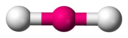
The molecular shape is linear. (This is a diatomic molecule)
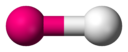
The central atom is phosphorous.
There are five electron pairs around phosphorous and no lone pairs.
The molecule has the general formula . Using this information and Table tab-molecular_shapes we find that the molecular shape is trigonal pyramidal.
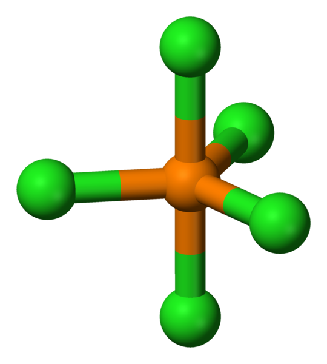
The central atom is sulfur.
There are six electron pairs around phosphorous and no lone pairs.
The molecule has the general formula . Using this information and Table tab-molecular_shapes we find that the molecular shape is octahedral.
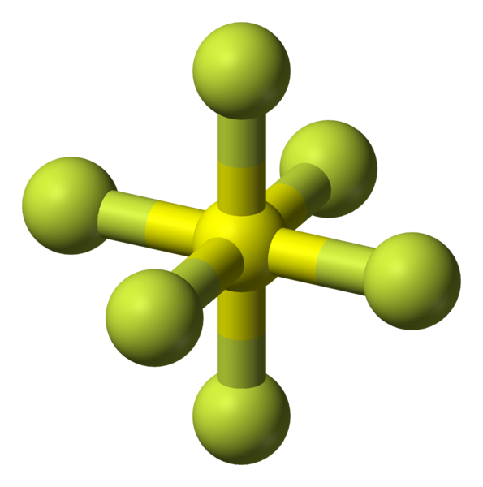
The central atom is carbon. (Draw the molecules Lewis diagram to see this.)
There are four electron pairs around carbon. These form two double bonds. There are no lone pairs around carbon.
The molecule has the general formula . Using this information and Table tab-molecular_shapes we find that the molecular shape is linear.
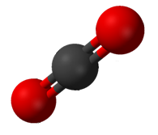
The central atom is carbon. (Draw the molecules Lewis diagram to see this).
There are four electron pairs around carbon and no lone pairs.
The molecule has the general formula . Using this information and Table tab-molecular_shapes we find that the molecular shape is tetrahedral.
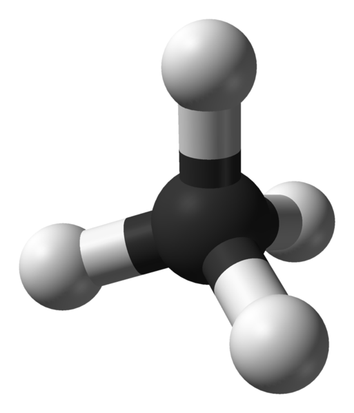
The central atom is oxygen (you can see this by drawing the molecules Lewis diagram).
There are two electron pairs around oxygen and two lone pairs.
The molecule has the general formula . Using this information and Table tab-molecular_shapes we find that the molecular shape is bent or angular.
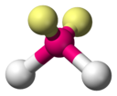
The central atom is carbon.
There are four electron pairs around carbon, two of which form a double bond to the oxygen atom. There are no lone pairs.
The molecule has the general formula . Using this information and Table tab-molecular_shapes we find that the molecular shape is trigonal planar.
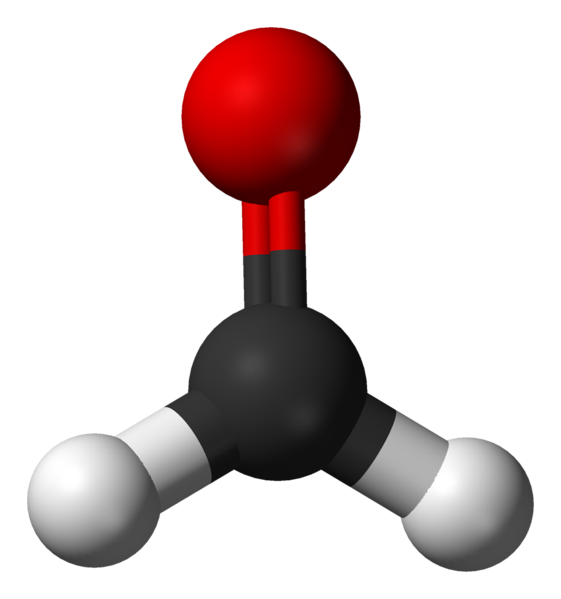
Electronegativity
So far we have looked at covalent molecules. But how do we know that they are covalent? The answer comes from electronegativity. Each element (except for the noble gases) has an electronegativity value.
Electronegativity is a measure of how strongly an atom pulls a shared electron pair towards it. The table below shows the electronegativities of the some of the elements.
For a full list of electronegativities see the periodic table at the front of the book. On this periodic table the electronegativity values are given in the top right corner. Do not confuse these values with the other numbers shown for the elements. Electronegativities will always be between and for any element. If you use a number greater than then you are not using the electronegativity.
Depending on which source you use for electronegativities you may see slightly different values.
Element
Electronegativity
Element
Electronegativity
Hydrogen ()
Lithium ()
Beryllium ()
Boron ()
Carbon ()
Nitrogen ()
Oxygen ()
Fluorine ()
Sodium ()
Magnesium ()
Aluminium ()
Silicon ()
Phosphorous ()
Sulfur ()
Chlorine ()
Potassium ()
Calcium ()
Bromine ()
Table of electronegativities for selected elements.
Electronegativity
Electronegativity is a chemical property which describes the power of an atom to attract electrons towards itself.
The concept of electronegativity was introduced by Linus Pauling in 1932, and this became very useful in explaining the nature of bonds between atoms in molecules. For this work, Pauling was awarded the Nobel Prize in Chemistry in 1954. He also received the Nobel Peace Prize in 1962 for his campaign against above-ground nuclear testing.
The greater the electronegativity of an atom of an element, the stronger its attractive pull on electrons. For example, in a molecule of hydrogen bromide (), the electronegativity of bromine () is higher than that of hydrogen (), and so the shared electrons will spend more of their time closer to the bromine atom. Bromine will have a slightly negative charge, and hydrogen will have a slightly positive charge. In a molecule like hydrogen () where the electronegativities of the atoms in the molecule are the same, both atoms have a neutral charge.
Calculating electronegativity differences
Calculate the electronegativity difference between hydrogen and oxygen.
Read the electronegativity of each element off the periodic table.
From the periodic table we find that hydrogen has an electronegativity of and oxygen has an electronegativity of .
Calculate the electronegativity difference
Calculate the electronegativity difference between: and , and , and , and , and .
and :
and :
and :
and :
and :
Electronegativity and bonding
The electronegativity difference between two atoms can be used to determine what type of bonding exists between the atoms. The table below lists the approximate values. Although we have given ranges here bonding is more like a spectrum than a set of boxes.
Note that metallic bonding is not given here. Metals have low electronegativities and so the valence electrons are not drawn strongly to any one atom. Instead, the valence electrons are loosely shared by all the atoms in the metallic network.
Non-polar and polar covalent bonds
It is important to be able to determine if a molecule is polar or non-polar since the polarity of molecules affects properties such as solubility, melting points and boiling points.
Electronegativity can be used to explain the difference between two types of covalent bonds. Non-polar covalent bonds occur between two identical non-metal atoms, e.g. , and . Because the two atoms have the same electronegativity, the electron pair in the covalent bond is shared equally between them. However, if two different non-metal atoms bond then the shared electron pair will be pulled more strongly by the atom with the higher electronegativity. As a result, a polar covalent bond is formed where one atom will have a slightly negative charge and the other a slightly positive charge.
This slightly positive or slightly negative charge is known as a partial charge. These partial charges are represented using the symbols (slightly positive) and (slightly negative). So, in a molecule such as hydrogen chloride (), hydrogen is and chlorine is .
The symbol is read as delta.
Polar molecules
Some molecules with polar covalent bonds are polar molecules,
e.g. . But not all molecules with polar covalent bonds are polar. An example is . Although has two polar covalent bonds (between
atom and the two atoms), the molecule itself is not polar. The
reason is that is a linear molecule, with both terminal atoms the same, and is therefore symmetrical. So there is no difference in charge between the two ends
of the molecule.
Polar molecules
A polar molecule is one that has one end with a slightly positive charge, and one end with a slightly negative charge. Examples include water, ammonia and hydrogen chloride.
Non-polar molecules
A non-polar molecule is one where the charge is equally spread across the molecule or a symmetrical molecule with polar bonds. Examples include carbon dioxide and oxygen.
To determine if a molecule is symmetrical look first at the atoms around the central atom. If they are different then the molecule is not symmetrical. If they are the same then the molecule may be symmetrical and we need to look at the shape of the molecule.
We can easily predict which molecules are likely to be polar and which are likely to be non-polar by looking at the molecular shape. The following activity will help you determine this and will help you understand more about symmetry.
Polar and non-polar molecules
The following table lists the molecular shapes. Build the molecule given for each case using jellytots and toothpicks. Determine if the shape is symmetrical. (Does it look the same whichever way you look at it?) Now decide if the molecule is polar or non-polar.
The molecule is linear. There is one bonding pair of electrons and no lone pairs.
Write down the electronegativities of each atom
Hydrogen:
Determine the electronegativity difference for each bond
There is only one bond and the difference is .
Determine the polarity of each bond
The bond is non-polar.
Determine the polarity of the molecule
The molecule is non-polar.
Polar and non-polar molecules
State whether methane () is polar or non-polar.
Determine the shape of each molecule
The molecule is tetrahedral. There are four bonding pairs of electrons and no lone pairs.
Determine the electronegativity difference for each bond
There are four bonds. Since each bond is between carbon and hydrogen, we only need to calculate one electronegativity difference. This is:
Determine the polarity of each bond
Each bond is polar.
Determine the polarity of the molecule
The molecule is symmetrical and so is non-polar.
Polar and non-polar molecules
State whether hydrogen cyanide () is polar or non-polar.
Determine the shape of the molecule
The molecule is linear. There are four bonding pairs, three of which form a triple bond and so are counted as . There is one lone pair on the nitrogen atom.
Determine the electronegativity difference and polarity for each bond
There are two bonds. One between hydrogen and carbon and the other between carbon and nitrogen. The electronegativity difference between carbon and hydrogen is and the electronegativity difference between carbon and nitrogen is . Both of the bonds are polar.
Determine the polarity of the molecule
The molecule is not symmetrical and so is polar.
Exercises
In a molecule of beryllium chloride ():
What is the electronegativity of beryllium?
What is the electronegativity of chlorine?
Which atom will have a slightly positive charge and which will have a slightly negative charge in the molecule? Represent this on a sketch of the molecule using partial charges.
Hydrogen will have a slightly positive charge and chlorine will have a slightly negative charge.
Polar covalent bond. The electronegativity difference is: . The bond is weakly polar.
Is the molecule polar or non-polar?
Hydrogen chloride is linear and therefore is a polar molecule.
Complete the table below:
Molecule
Difference in electronegativity between atoms
Non-polar/polar covalent bond
Polar/non-polar molecule
Molecule
Difference in electronegativity between atoms
Non-polar/polar covalent bond
Polar/non-polar molecule
Polar covalent bond
Polar molecule. Water has a bent or angular shape.
Polar covalent bond
Polar molecule. Hydrogen bromide is linear.
Non-polar covalent bond
Non-polar molecule.
Polar covalent bond
Non-polar molecule. Methane is tetrahedral.
Polar covalent bond
Non-polar molecule. Phosphorous pentafluoride is trigonal bypramidal and symmetrical.
Polar covalent bond
Non-polar molecule. Beryllium chloride is linear and symmetrical.
Polar covalent bond
Polar molecule. Carbon monoxide is linear, but not symmetrical.
Polar covalent bond
Non-polar molecule. Acetylene is linear and symmetrical.
Polar covalent bond
Polar molecule. Sulfur dioxide is bent or angular and is not symmetrical.
Polar covalent bond
Non-polar molecule. Boron trifluoride is trigonal pyramidal and not symmetrical.
Energy and bonding
As we saw earlier in the chapter we can show the energy changes that occur as atoms come together (Figure fig-bonding-energy1). Shown below is the same image but this time with two extra pieces of information: the bond energy and the bond length.
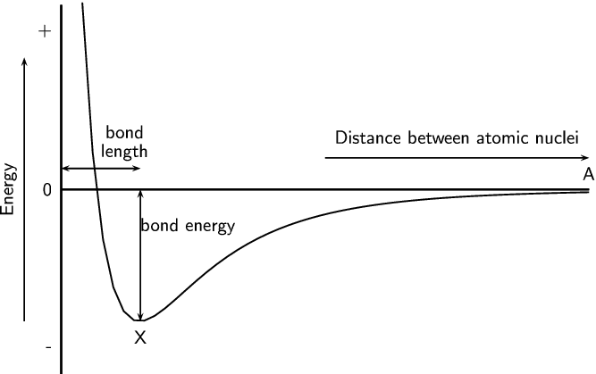
<code>
(-5.3,-4)(6.5,4)
\psaxes[ticks=none,labels=none](-4,0)(-4,-3.5)(6,3.5)
\psplot{-3.6}{6}{0.15 x 10 add mul -12 exp 0.15 x 10 add mul -6 exp sub
10 mul}
\rput{90}(-5,0){Energy}
\psline{->}(-4.7,-2.5)(-4.7,2.5)
\uput[l](-4,3){+}
\uput[l](-4,0){0}
\uput[l](-4,-3){-}
\rput[u](3.5,1){Distance between atomic nuclei}
\psline{->}(1,0.6)(6,0.6)
\uput[u](6,0){A}
\pnode(-2.5,0){qTop}
\pnode(-2.5,-2.5){qBottom}
\pnode(-4,0.4){pLeft}
\pnode(-2.5,0.4){pRight}
\ncline{}{qTop}{qBottom}
\rput(-1.6,-0.7){bond energy}
\ncline{}{pLeft}{pRight}
\rput(-2.8,0.7){length}
\rput(-2.8,1.1){bond}
\uput[d](-2.5,-2.5){X}
</code>
Graph showing the change in energy that takes place as atoms move closer together.
Bond length
The distance between the nuclei of two adjacent atoms when they bond.
Bond energy
The amount of energy that must be added to the system to break the bond that has formed.
It is important to remember that bond length is measured between two atoms that are bonded to each other. The following diagrams show the bond length for and for . The grey circle represents carbon and the white circle represents oxygen.
The bond length for each bond in carbon dioxide () is indicated by X. Y is not the bond length.
A third property of bonds is the bond strength. Bond strength means how strongly one atom attracts and is held to another. The strength of a bond is related to the bond length, the size of the bonded atoms and the number of bonds between the atoms. In general:
the shorter the bond length, the stronger the bond between the atoms.
the smaller the atoms involved, the stronger the bond.
the more bonds that exist between the same atoms, the stronger the bond.
A chemical bond is the physical process that causes atoms to be attracted together and to be bound in new compounds.
The noble gases have a full valence shell. Atoms bond to try fill their outer valence shell.
There are three forces that act between atoms: attractive forces between the positive nucleus of one atom and the negative electrons of another; repulsive forces between like-charged electrons, and repulsion between like-charged nuclei.
The energy of a system of two atoms is at a minimum when the attractive and repulsive forces are balanced.
Lewis diagrams are one way of representing molecular structure. In a Lewis diagram, dots or crosses are used to represent the valence electrons around the central atom.
A covalent bond is a form of chemical bond where pairs of electrons are shared between two atoms.
A single bond occurs if there is one electron pair that is shared between the same two atoms.
A double bond occurs if there are two electron pairs that are shared between the same two atoms.
A triple bond occurs if there are three electron pairs that are shared between the same two atoms.
A dative covalent bond is a description of covalent bonding that occurs between two atoms in which both electrons shared in the bond come from the same atom.
Dative covalent bonds occur between atoms of elements with a lone pair and atoms of elements with no electrons. Examples include the hydronium ion () and the ammonium ion ().
The shape of molecules can be predicted using the VSEPR theory.
Valence shell electron pair repulsion (VSEPR) theory is a model in chemistry, which is used to predict the shape of individual molecules. VSEPR is based upon minimising the extent of the electron-pair repulsion around the central atom being considered.
Electronegativity is a chemical property which describes the power of an atom to attract electrons towards itself in a chemical.
Electronegativity can be used to explain the difference between two types of covalent bonds: polar covalent bonds (between non-identical atoms) and non-polar covalent bonds (between identical atoms or atoms with the same electronegativity).
A polar molecule is one that has one end with a slightly positive charge, and one end with a slightly negative charge. Examples include water, ammonia and hydrogen chloride.
A non-polar molecule is one where the charge is equally spread across the molecule or a symmetrical molecule with polar bonds.
Bond length is the distance between the nuclei of two atoms when they bond.
Bond energy is the amount of energy that must be added to the system to break the bond that has formed.
Bond strength means how strongly one atom attracts and is held to another atom. Bond strength depends on the length of the bond, the size of the atoms and the number of bonds between the two atoms.
Exercises
Give one word/term for each of the following descriptions.
The distance between two adjacent atoms in a molecule.
Bond length
A type of chemical bond that involves the sharing of electrons between two atoms.
Covalent bond
A measure of an atom's ability to attract electrons to itself in a chemical bond.
Electronegativity
Which ONE of the following best describes the bond formed between an ion and the molecule?
Covalent bond
Dative covalent (co-ordinate covalent) bond
Ionic Bond
Hydrogen Bond
Dative covalent (co-ordinate covalent) bond
Explain the meaning of each of the following terms:
valence electrons
The number of electrons in the outermost shell of an atom that are available for use in bonding either by sharing, donating or accepting.
bond energy
The amount of energy needed for a bond to break.
covalent bond
A type of bond that occurs between two atoms with a difference in electronegativity between and .
Which of the following reactions will not take place? Explain your answer.
will not take place as neon does not have electrons available for bonding. Neon is a noble gas and has a full outer shell of electrons.
Draw the Lewis diagrams for each of the following:
An atom of strontium (). (Hint: Which group is it in? It will have an identical Lewis diagram to other elements in that group).
This is a diatomic molecule and so the molecular shape is linear.
The central atom is magnesium (draw the molecules Lewis structure to see this).
There are two electron pairs around magnesium and no lone pairs.
There are two bonding electron pairs and no lone pairs. The molecule has the general formula . Using this information and Table tab-molecular_shapes we find that the molecular shape is linear.
The central atom is boron (draw the molecules Lewis structure to see this).
There are three electron pairs around boron and no lone pairs.
There are three bonding electron pairs and no lone pairs. The molecule has the general formula . Using this information and Table tab-molecular_shapes we find that the molecular shape is trigonal planar.
The central atom is carbon (draw the molecules Lewis structure to see this).
There are four electron pairs around carbon forming two double bonds. There are no lone pairs.
The molecule has the general formula . Using this information and Table tab-molecular_shapes we find that the molecular shape is linear.
The central atom is carbon (draw the molecules Lewis structure to see this).
There are four bonding electron pairs and no lone pairs. The molecule has the general formula . Using this information and Table tab-molecular_shapes we find that the molecular shape is tetrahedral.
The central atom is carbon (draw the molecules Lewis structure to see this).
There are four bonding electron pairs and no lone pairs. The molecule has the general formula . Using this information and Table tab-molecular_shapes we find that the molecular shape is tetrahedral.
This is a diatomic molecule and so the molecular shape is linear.
The central atom is sulfur
There are six electron pairs around beryllium and no lone pairs.
The molecule has the general formula . Using this information and Table tab-molecular_shapes we find that the molecular shape is octahedral.
Complete the following table.
Element pair
Electronegativity difference
Type of bond that could form
Hydrogen and lithium
Hydrogen and boron
Hydrogen and oxygen
Hydrogen and sulfur
Magnesium and nitrogen
Magnesium and chlorine
Boron and fluorine
Sodium and fluorine
Oxygen and nitrogen
Oxygen and carbon
Element pair
Electronegativity difference
Type of bond that could form
Hydrogen and lithium
Strong polar covalent bond
Hydrogen and boron
Weak polar covalent bond
Hydrogen and oxygen
Strong polar covalent bond
Hydrogen and sulfur
Weak polar covalent bond
Magnesium and nitrogen
Strong polar covalent bond
Magnesium and chlorine
Strong polar covalent bond
Boron and fluorine
Strong polar covalent bond
Sodium and fluorine
Ionic bond
Oxygen and nitrogen
Weak polar covalent bond
Oxygen and carbon
Weak polar covalent bond
Are the following molecules polar or non-polar?
The molecule is linear. There are two bonding pairs forming a double bond and two lone pairs on each oxygen atom.
There is one bond. The electronegativity difference between oxygen and oxygen is . The bond is non-polar.
The molecule is symmetrical and is non-polar.
The molecule is linear. There are two bonding pairs forming two single bonds and three lone pairs on each bromine atom.
There are two bonds, both of which are between magnesium and bromine. The electronegativity difference between magnesium and bromine is . The bonds are polar.
The molecule is symmetrical and is non-polar.
The molecule is trigonal planar. There are three bonding pairs forming three single bonds and three lone pairs on each fluorine atom.
There are three bonds, all of which are between boron and fluorine. The electronegativity difference between boron and fluorine is . The bonds are polar.
The molecule is symmetrical and is non-polar.
The molecule is trigonal planar. There are four bonding pairs forming two single bonds and one double bond. There are two lone pairs on the oxygen atom.
There are three bonds, two of which are between carbon and hydrogen. The electronegativity difference between carbon and hydrogen is . The other bond is between carbon and oxygen. The electronegativity difference between carbon and oxygen is . All the bonds are polar.
The molecule is not symmetrical and is polar.
Given the following graph for hydrogen:
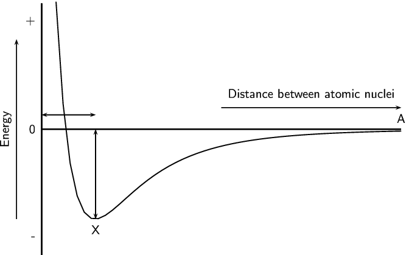
<code>
(-5.5,-4)(6.5,4)
\psaxes[ticks=none,labels=none](-4,0)(-4,-3.5)(6,3.5)
\psplot{-3.6}{6}{0.15 x 10 add mul -12 exp 0.15 x 10 add mul -6 exp sub
10 mul}
\rput{90}(-5,0){Energy}
\psline{->}(-4.7,-2.5)(-4.7,2.5)
\uput[l](-4,3){+}
\uput[l](-4,0){0}
\uput[l](-4,-3){-}
\rput[u](3.5,1){Distance between atomic nuclei}
\psline{->}(1,0.6)(6,0.6)
\uput[u](6,0){A}
\pnode(-2.5,0){qTop}
\pnode(-2.5,-2.5){qBottom}
\pnode(-4,0.4){pLeft}
\pnode(-2.5,0.4){pRight}
\ncline{}{qTop}{qBottom}
\ncline{}{pLeft}{pRight}
\uput[d](-2.5,-2.5){X}
</code>
The bond length for hydrogen is ~. Indicate this value on the graph. (Remember that is a picometer and means ~).
The bond energy for hydrogen is ~. Indicate this value on the graph.
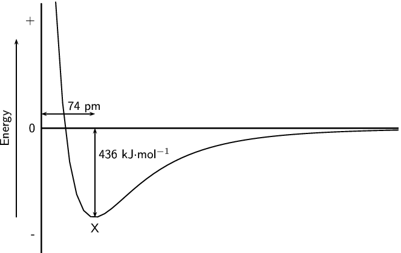
<code>
(-5.5,-4)(6,4)
\psaxes[ticks=none,labels=none](-4,0)(-4,-3.5)(6,3.5)
\psplot{-3.6}{6}{0.15 x 10 add mul -12 exp 0.15 x 10 add mul -6 exp sub
10 mul}
\rput{90}(-5,0){Energy}
\psline{->}(-4.7,-2.5)(-4.7,2.5)
\uput[l](-4,3){+}
\uput[l](-4,0){0}
\uput[l](-4,-3){-}
\pnode(-2.5,0){qTop}
\pnode(-2.5,-2.5){qBottom}
\pnode(-4,0.4){pLeft}
\pnode(-2.5,0.4){pRight}
\ncline{}{qTop}{qBottom}
\rput(-1.4,-0.7){436 kJ$\cdot$mol$^{-1}$}
\ncline{}{pLeft}{pRight}
\rput(-2.8,0.6){74 pm}
\uput[d](-2.5,-2.5){X}
</code>
What is important about point X?
At point X the attractive and repulsive forces acting on the two hydrogen atoms are balanced. The energy is at a minimum.
Hydrogen chloride has a bond length of ~ and a bond energy of ~. Draw a graph of energy versus distance and indicate these values on your graph. The graph does not have to be accurate, a rough sketch graph will do.
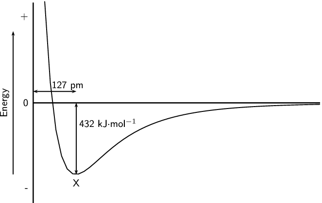
<code>
(-5.5,-4)(6,4)
\psaxes[ticks=none,labels=none](-4,0)(-4,-3.5)(6,3.5)
\psplot{-3.6}{6}{0.15 x 10 add mul -12 exp 0.15 x 10 add mul -6 exp sub
10 mul}
\rput{90}(-5,0){Energy}
\psline{->}(-4.7,-2.5)(-4.7,2.5)
\uput[l](-4,3){+}
\uput[l](-4,0){0}
\uput[l](-4,-3){-}
\pnode(-2.5,0){qTop}
\pnode(-2.5,-2.5){qBottom}
\pnode(-4,0.4){pLeft}
\pnode(-2.5,0.4){pRight}
\ncline{}{qTop}{qBottom}
\rput(-1.4,-0.7){432 kJ$\cdot$mol$^{-1}$}
\ncline{}{pLeft}{pRight}
\rput(-2.8,0.6){127 pm}
\uput[d](-2.5,-2.5){X}
</code>